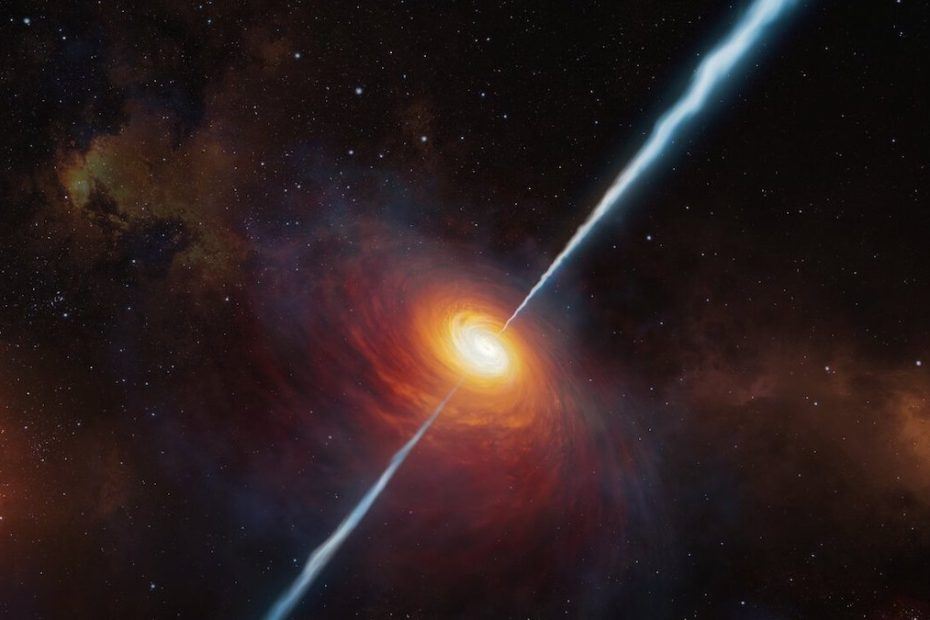

စကြာဝဠာ အစောပိုင်းက ကွေဆာတွေ (quasars) ထဲမှာ အချိန်ဟာ ပိုမိုနှေးကွေးစွာ စီးဆင်းနေ ခဲ့ကြောင်း ရှာဖွေ တွေ့ရှိ ထားပါတယ်။
ဒါဟာ အိုင်းစတိုင်းရဲ့ ကြိုတင် ဟောကိန်း ထုတ်ထားခဲ့တဲ့ အတိုင်းပါပဲ။ သူ့ရဲ့ အထွေထွေ နှိုင်းရ နိယာမ (General Theory of Relativity) အရ ဆွဲငင်အား ကြီးမားတဲ့ အရာဝတ္ထုတွေရဲ့ အနီးမှာ အချိန်ဟာ ပိုမို နှေးကွေးစွာ စီးဆင်းနေမှာ ဖြစ်ပါတယ်။ ဒီအချက်ကို ဟင်းလင်းပြင် ပြန့်ကားခြင်း ဆိုတဲ့ အချက်နဲ့ ပေါင်းစပ်လိုက်တဲ့ အခါကျတော့ စကြာဝဠာ အစောပိုင်း ကာလက အချိန်ဟာ အခုထက် ပိုမို နှေးကွေး ခဲ့တယ်ဆိုတဲ့ အဖြေ ရလာတာပဲ ဖြစ်ပါတယ်။
တနည်း ပြောရရင် အခု တွေ့ရှိချက်ဟာ “အိုင်းစတိုင်းကြီး မှန်ပြန်ပြီ” ဆိုတဲ့ နောက်ထပ် တွေ့ရှိချက် တစ်ခုသာ ဖြစ်ပါတယ် လို့ ဆစ်ဒ်နီ တက္ကသိုလ် (University of Sydney) က နက္ခတ် ပညာရှင် Geraint Lewis က ရှင်းပြပါတယ်။
သူနဲ့ University of Auckland က နက္ခတ် ပညာရှင် တစ်ဦးဖြစ်တဲ့ Brendon Brewer တို့ဟာ အခု တွေ့ရှိချက်ကို တင်ပြခဲ့ကြတာ ဖြစ်ပါတယ်။ ဒါပေမယ့် ဒါဟာ အသစ် အဆန်း တစ်ခု မဟုတ်ပဲ နက္ခတ် ပညာရှင် တွေက နှစ်ပေါင်းများစွာ ကတဲက ကြိုတင် ခန်းမှန်း ထားချက်ကို အတည်ပြုပေး တာပဲ ဖြစ်ပါတယ်။
လွန်ခဲ့တဲ့ နှစ်ပေါင်း များစွာ ကတည်းက နက္ခတ်ပညာရှင် တွေဟာ ကွေဆာတွေရဲ့ ဝန်းကျင်မှာ အချိန်ဟာ ပိုမိုနှေးကွေးစွာ စီးဆင်းနေမယ်လို့ ဟောကိန်း ထုတ်ထား ခဲ့ကြပါတယ်။ ဒါပေမယ့် ဒီအချက်ကို လက်တွေ့ သက်သေပြဖို့ ကြိုးစားမှုတွေကတော့ မအောင်မြင် ခဲ့ပါဘူး။
ကွေဆာတွေ ဆိုတာ အလွန် အင်မတန် ကြီးမားတဲ့ မဟာတွင်းနက်ကြီးတွေ (supermassive black holes) ဖြစ်ကြပါတယ်။ ဒီ မဟာတွင်းနက် ကြီးတွေကို ဂလက်ဆီ ကြယ်စုကြီးတွေရဲ့ ဗဟိုမှာ တွေ့ရလေ့ ရှိပါတယ်။
ဒီ ကွေဆာတွေရဲ့ ပတ်ခြာလည်မှာ ကွေဆာထဲကို စီးဝင်သွားတဲ့ ဓါတ်ငွေ့ဝဲဂယက်ကြီး ရှိပါတယ်။ ဒီဝဲဂယက်ကြီးရဲ့ အပူချိန်ကြောင့် တောက်ပတဲ့ အလင်းတွေ ထွက်ပေါ် လာပါတယ်။ ဒီ ဝဲဂယက်ရဲ့ အရွယ်အစားဟာ သေးငယ်တာမို့ သူ့ဆီက ထွက်တဲ့ အလင်းရဲ့ တောက်ပအား ပြောင်းလဲမှုဟာလဲ အလွန် မြန်ဆန်ပါတယ်။ ဒီ ကွေဆာတွေရဲ့ အလင်းတောက်ပမှုဟာ နေ့စဉ်နှင့် အမျှ ပြောင်းလဲလို့ နေတယ်။
ဒီလို အလင်းတောက်ပမှုအား နေ့စဉ် ပြောင်းလဲ နေတာကြောင့် မို့လဲ သူတို့ကို စောင့်ကြည့်ဖို့ ပိုမို လွယ်ကူ လာစေပါတယ်။
ဒါပေမယ့် ဒီကွေဆာ တွေဆိုတာက စကြာဝဠာ အစဦးပိုင်းက ရှိခဲ့တဲ့ မဟာတွင်းနက်ကြီးတွေပါ။ ဒီတော့ သူတို့ဆီက လာတဲ့ အလင်းဆိုတာကလဲ ကျွန်တော်တို့ဆီ ရောက်ဖို့ အချိန် ၁၂ ဘီလီယံ (သန်း ၁၂,၀၀၀) လောက် ကြာပါတယ်။ ဒီကာလ အတွင်းမှာ စကြာဝဠာ ကလဲ အဆများစွာ ပြန့်ကားလို့ လာခဲ့ပြီး ဖြစ်ပါတယ်။
ဆိုလိုတာက အခု မြင်ရတဲ့ ကွေဆာတွေ ဆိုတာ လွန်ခဲ့တဲ့ နှစ် ၁၂ ဘီလီယံ ကာလ စကြာဝဠာ သေးသေးလေး ရှိခဲ့ချိန်က အခြေအနေကို မြင်နေရတာပဲ ဖြစ်ပါတယ်။
နက္ခတ်ပညာရှင် Lewis နဲ့ Brewer တို့ဟာ ကွေဆာပေါင်း ၁၉၀ ကို နှစ်ပေါင်း ၂၀ ကျော်ကြာ စောင့်ကြည့် မှတ်တမ်းတင် ထားခဲ့တဲ့ အချက်အလက်တွေကို အသေးစိတ် လေ့လာခဲ့ကြပါတယ်။ ဒီ အချက်အလက် data တွေကို Sloan Digital Sky Survey (SDSS), Pan-STARRS and the Dark Energy Survey တို့ကနေပြီး စုဆောင်း ထားခဲ့ကြတာ ဖြစ်ပါတယ်။
သူတို့က ဒီ ကွေဆာတွေရဲ့ အလင်းတောက်ပအား ပြောင်းလဲမှုကို အသေးစိတ် လေ့လာ ခဲ့ကြပါတယ်။ ဒီလို လေ့လာခဲ့ ကြရာမှာ စကြာဝဠာ အစောပိုင်း ကျတဲ့ ကွေဆာတွေရဲ့ အလင်းပြောင်းလဲမှုဟာ နောက်ပိုင်းကျတဲ့ ကွေဆာတွေရဲ့ အလင်းပြောင်းလဲမှုနဲ့ နှိုင်းယှဉ်ရင် ပိုမို နှေးကွေးနေတယ် ဆိုတာ တွေ့ရှိ ခဲ့ကြပါတယ်။
သူတို့ရဲ့ တွက်ချက်မှုအရ စကြာဝဠာ သက်တမ်း ပထမ နှစ်သန်း ၁,၀၀၀ အတွင်းက ကွေဆာတွေရဲ့ အချိန်ဟာ ယခုလက်ရှိ ကမ္ဘာပေါ်က အချိန်နဲ့ ယှဉ်ရင် ၅ ဆ လောက် ပိုမို နှေးကွေးနေတယ် ဆိုတာကို တွေ့ရှိခဲ့ ရတာ ဖြစ်ပါတယ်။
ဒါပေမယ့် ဒီ ကွေဆာတွေ အနေနဲ့ကတော့ သူတို့အတွင်းထဲမှာ အချိန်က ပိုနှေးသွားတာ မဟုတ်ပါဘူးတဲ့။ တကယ်တမ်းက ဒီ ကွေဆာတွေ ရှိနေခဲ့တဲ့ စကြာဝဠာ ကိုယ်နှိုက်က (အဲ့သည် အချိန်တုန်းက) အချိန်နှေးကွေးစွာ စီးဆင်းနေတာ ဖြစ်ပါတယ်။ သူတို့ အနေနဲ့ ကြည့်ရင်တော့ အချိန်ဟာ ပုံမှန်ပဲ စီးဆင်းနေပြီး ကျွန်တော်တို့ အနေနဲ့ ကြည့်မှုသာ အဲ့သည်ကာလက အချိန်ဟာ နှေးနေတယ်လို့ မြင်ကြရတာ ဖြစ်ပါတယ်။
ဒါကို တနည်းပြောရရင် အဲ့သည် အချိန်က စကြာဝဠာဟာ အရွယ် သေးငယ်တဲ့ အတွက် သိပ်သည်းမှုလဲ ပိုများပါတယ်။ ဒြပ်ဝတ္ထု ပစ္စည်းတွေဟာလဲ အခုထက် တခုနဲ့ တခု ပိုမို နီးကပ်နေတာမို့ အချင်းချင်းကြားက ဆွဲအားကလဲ ပိုပြီး များနေမှာ ဖြစ်ပါတယ်။ ဒါတွေ အားလုံး ပေါင်းစပ် ကြည့်လိုက်တော့ စကြာဝဠာ အစောပိုင်းက အချိန်ဟာ ပိုပြီး နှေးနေတယ် ဆိုတာ ထင်ရှားလာပါတယ်။
အခု တွေ့ရှိချက်ဟာ အိုင်းစတိုင်းရဲ့ သီအိုရီကို မှန်ကန်ကြောင်း အတည်ပြုပေးတဲ့ နောက်ထပ် အထောက်အထား တခုတင် မကပါဘူး။ ဒါဟာ ကျွန်တော်တို့ရဲ့ စကြာဝဠာဟာ တဖြည်းဖြည်း ပြန့်ကားလို့ လာနေတယ် ဆိုတဲ့ သီအိုရီ အတွက် နောက်ထပ် အထောက်အထား တရပ်လဲ ဖြစ်ပါတယ်။
Ref: Time appeared to move 5 times more slowly in 1st billion years after Big Bang, quasar ‘clocks’ reveal | Space
စကြာဝဠာ အစောပိုင်းက အချိန်ဟာ ၅ ဆ ပိုနှေးခဲ့ကြောင်း ပညာရှင်များ ရှာဖွေတွေ့ရှိ

July 11, 2023
Other Posts
- ကမ္ဘာ့ရေချိုကန်များ အလျှင်အမြန် ခမ်းခြောက်လာနေ
- ရုရှားအာကာသယာဉ် ပျက်စီးမှုအတွက် နာဆာ အာကာသယာဉ်မှူးကို စွပ်စွဲ
- နာဆာရဲ့အာကာသ ယာဉ်ပေါ်သုံး ဘောပင်
- အိုင်းစတိုင်းရဲ့ ဟောကိန်း မှန်ပြန်ပြီ
- အာကာသကို အလည်သွားမယ်
- ဆွဲငင်အား (Gravity) ဆိုတာဘာလဲ
- အာကာသထဲကို ဘယ်လောက် ဝေးဝေးထိ မြင်နိုင်သလဲ
- ကလေးကိုယ့်စကားနားထောင်အောင် ဘယ်လိုလေ့ကျင့်သင်ကြားပေးမလဲ
- Airbus ရဲ့ မြို့တွင်းသုံး လျှပ်စစ်မိုးပျံတက္ကစီ
- မစ်ကီးဝေး ဂလက်ဆီထဲက ထွက်ပြေးဖို့ ကြိုးစားနေတဲ့ ကြယ်ကြီး